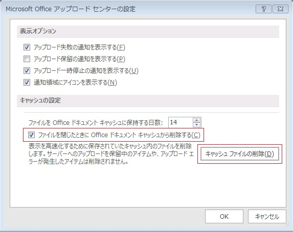
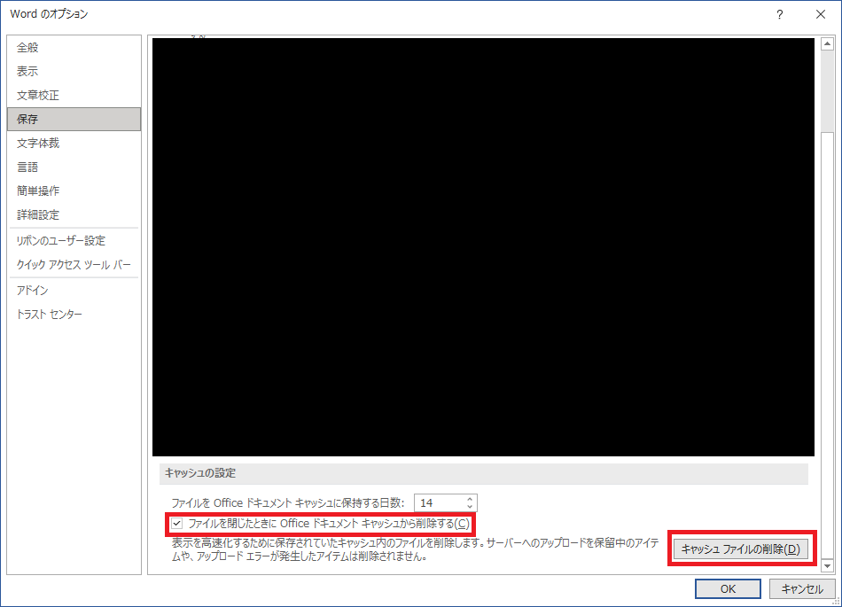

2021/7/6 Update
Microsoft 365 でアップロード センターが Office アプリに統合されたことや、内部動作がバージョンとともに変更されたことを受け、ドキュメント キャッシュ削除手順を修正しました。
こんにちは、Office サポートの荒井です。
今回の投稿では、SharePoint Server など WebDAV が有効なサーバーから Office 2010 以降のクライアントで Office ファイルを開いたり保存したりする時に、メッセージが表示されファイルが開かなかったり、上書き保存ができない現象について説明します。
現象
SharePoint Server など WebDAV が有効なサーバーから Office ファイルを開く時に、以下のようなメッセージが表示されファイルが開かない場合があります。
メッセージ例 1:「‘<ファイル名>’ を開くことができませんでした。」
メッセージ例 2:「ドキュメント キャッシュ をアップグレードが必要です。」
また、SharePoint Server など WebDAV が有効なサーバーへ Office ファイルを上書き保存する時、画面上部に以下のメッセージが表示され上書き保存ができない場合があります。
メッセージ例 1:「アップロードできませんでした。 このファイルは他のユーザーによって編集がロックされています。[使用可能になったら通知する]」
メッセージ例 2:「アップロードできませんでした。 このファイルは他のユーザーによって編集がロックされています。[上書き保存]」
メッセージ例 3:「アップロードできませんでした 申し訳ございません。別のユーザーがサーバー側のコピーを更新したたため、今の状態では変更した内容をアップロードすることができません。[コンピューター側のバージョンを保持] [サーバー側のバージョンを保持]」
要因
以下のような理由が考えられます。
「‘<ファイル名>’ を開くことができませんでした。」
- ネットワークが接続されていない、あるいは、一時的なネットワークの瞬断などで接続できないことが考えられます
- Office ファイルを開く処理過程で何らかの予期しない問題が発生していることが考えられます
- クライアントで保持される Office ドキュメント キャッシュに破損や不整合が考えられます
「ドキュメント キャッシュ をアップグレードが必要です。」
- 通常、Office ドキュメント キャッシュの修復は、必要に応じて自動的に行われ、このようなメッセージが表示されることはありません。しかし、前回の修復プロセスで何らかの予期しない問題が発生した場合、次に Office ドキュメント キャッシュ が参照されるタイミングで表示されることがあります
「アップロードできませんでした。 このファイルは他のユーザーによって編集がロックされています。[使用可能になったら通知する]」
「アップロードできませんでした。 このファイルは他のユーザーによって編集がロックされています。[上書き保存]」
「アップロードできませんでした 申し訳ございません。別のユーザーがサーバー側のコピーを更新したたため、今の状態では変更した内容をアップロードすることができません。[コンピューター側のバージョンを保持] [サーバー側のバージョンを保持]」
- メッセージが示すとおり、他のユーザーが該当のファイルを開き更新している場合に表示される場合があります
- 自分以外にファイルを開いておらず、他のユーザーがファイルを開いていないにも関わらず表示される場合は、Office ドキュメント キャッシュの破損や不整合が考えられます
また、上書き保存を実施後、再度ファイルを開いた時に、更新前の内容が表示される場合は、以下のような要因が考えられます。
- サーバーが返す応答内容が期待しない状態となっている
- クライアントとサーバーで保持しているバージョンの不整合が生じている
- クライアントで保持される Office ドキュメント キャッシュに破損や不整合が生じている
対処方法
方法 1.
Office 製品の更新によって対応できることがあります。
Office はバージョンによってインストール方法がクイック実行形式のものと、Windows Installer 形式のものとがありますが、以下ブログの [更新方法] の手順にて最新のバージョンに更新します。
タイトル : クイック実行形式 (C2R) と Windows インストーラー形式 (MSI) を見分ける方法
アドレス : https://blogs.technet.microsoft.com/officesupportjp/2016/09/08/howto_c2r_or_msi/
方法 2.
Office 製品へ最新の更新プログラムを適用しても現象が回避できない場合、Office ドキュメント キャッシュを削除します。
ユーザーインターフェースから削除する場合 :
<以前の Office の場合>
すべての Office プログラムを終了します。
スタート メニューから [Microsoft Office <ご使用のバージョン> ツール]-[Office <ご使用のバージョン> アップロード センター] をクリックします。アップロード センター ダイアログで、[設定] をクリックします。
[キャッシュ ファイルの削除] ボタンをクリックします。
“キャッシュされた情報をすべて削除してもよろしいですか？” というメッセージ ダイアログが表示されたら、[キャッシュされた情報を削除する] ボタンをクリックします。
[ファイルを閉じたときに Office ドキュメント キャッシュから削除する] オプションでチェックを入れ有効に設定します。
[OK] ボタンをクリックし、Microsoft Office アップロード センターの設定 ダイアログを閉じます。

<Microsoft 365 の場合>
※古いバージョンで以下のメニューが存在しない場合は、上記の <以前の Office の場合> の手順で実施しください。
- Word / Excel / PowerPoint のいずれかのアプリを起動し、[ファイル] - [オプション] - [保存] を開きます。
- [キャッシュ ファイルの削除] をクリックします。
- “キャッシュ ファイルをすべて削除しますか？” というメッセージ ダイアログが表示されたら、[キャッシュ ファイルの削除] ボタンをクリックします。
- [ファイルを閉じたときに Office ドキュメント キャッシュから削除する] オプションでチェックを入れ有効に設定します。
- オプション画面の [OK] をクリックして画面を閉じます。

手動で削除する場合 :
ユーザーインターフェースから削除する方法で回避できない場合、手動での削除を実施します。
すべての Office プログラムを終了します。
Ctrl + Shift + Esc キーを押してタスクマネージャーを起動します。
[詳細] タブ (Windows 8 以降) または [プロセス] タブ (Windows 7) で [MSOSYNC.EXE] プロセスが存在するかを確認します。
MSOSYNC.EXE が存在する場合は、MSOSYNC.EXE を選択した状態で [タスクの終了] または [プロセスの終了] をクリックしてプロセスを終了します。MSOSYNC.EXE が存在しない場合は、そのまま次の手順に進みます。エクスプローラーを起動し、以下のフォルダーを確認して移動します。
%localappdata%\Microsoft\Office\<Office バージョン>\OfficeFileCache
Office 2010 をご使用の場合の例)
C:\Users\<ユーザー名>\AppData\Local\Microsoft\Office\14.0\OfficeFileCacheOffice 2013 をご使用の場合の例)
C:\Users\<ユーザー名>\AppData\Local\Microsoft\Office\15.0\OfficeFileCacheOffice 2016 / Office 2019 / Microsoft 365 をご使用の場合の例)
C:\Users\<ユーザー名>\AppData\Local\Microsoft\Office\16.0\OfficeFileCacheOfficeFileCache フォルダーを削除します。
※ 以前のキャッシュの状態を調査したい場合など、バックアップの必要がある場合は、デスクトップなどの任意の別のフォルダにコピーした上で、ここからはフォルダを削除してください。(この場所でフォルダをリネームしないでください。)Office アップロード センターの設定変更を実施します。
クライアントのスタート メニューから、[Microsoft Office <ご使用のバージョン> ツール]-[Office <ご使用のバージョン> アップロード センター] を選択し、アップロード センター ダイアログで、[設定] をクリックします。[ファイルを閉じたときに Office ドキュメント キャッシュから削除する] オプションでチェックを入れ有効に設定します。
スクリプトで削除する場合 :
以下のコードをメモ帳に貼り付け、*.vbs に保存し実行します。
1 |
|
Office 用グループ ポリシー管理テンプレートで設定を変更する場合 (管理者向け):
Office ドキュメント キャッシュは、ユーザープロファイル配下に作成されるため、Office 管理用ポリシーテンプレートを使用し全ユーザーに対し一括して Office ドキュメント キャッシュの削除を実施することはできませんが、Office アップロード センターの [ファイルを閉じたときに Office ドキュメント キャッシュから削除する] オプション設定を有効にする設定変更は一括して可能です。
1. ご使用の Office 製品のグループ ポリシー管理用テンプレート ファイルをダウンロードします
タイトル : Office 2010 Administrative Template files (ADM, ADMX/ADML) and Office Customization Tool download
アドレス : https://www.microsoft.com/en-us/download/details.aspx?id=18968
タイトル : Office 2013 Administrative Template files (ADMX/ADML) and Office Customization Tool
アドレス : https://www.microsoft.com/en-us/download/details.aspx?id=35554
タイトル : Office 2016 Administrative Template files (ADMX/ADML) and Office Customization Tool
アドレス : https://www.microsoft.com/en-us/download/details.aspx?id=49030
2．.admx ファイルは、以下のドキュメント等の方法で組み込みます
タイトル : グループ ポリシー管理での ADMX ファイルの使用に関するステップ バイ ステップ ガイド
アドレス : https://technet.microsoft.com/ja-jp/library/cc709647(WS.10).aspx
3. グループ ポリシー エディタで、以下の項目を “有効” に設定します
[ユーザーの構成]
[ポリシー]
[管理用テンプレート]
[Microsoft Office <ご使用のバージョン>]
[Microsoft Office ドキュメント キャッシュ]
“Office ドキュメント キャッシュからドキュメントを削除する” [有効]
参考情報
タイトル : Office ドキュメント キャッシュの設定
アドレス : https://support.office.com/ja-jp/article/4b497318-ae4f-4a99-be42-b242b2e8b692
今回の投稿は以上です。
※ 本情報の内容（添付文書、リンク先などを含む）は、作成日時点でのものであり、予告なく変更される場合があります。